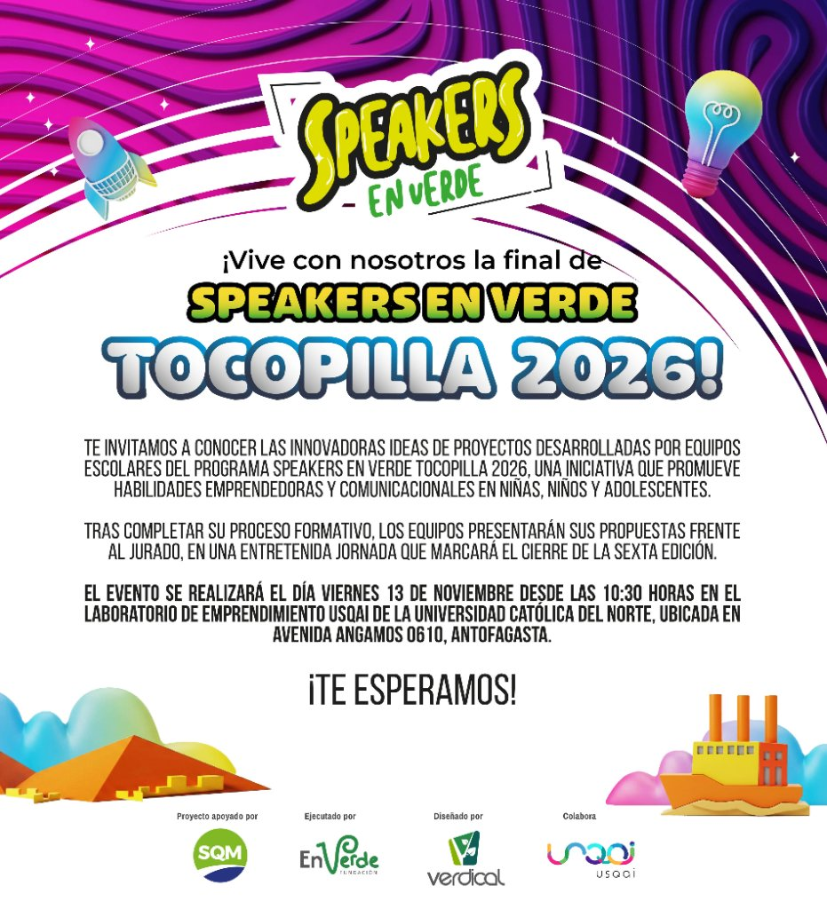
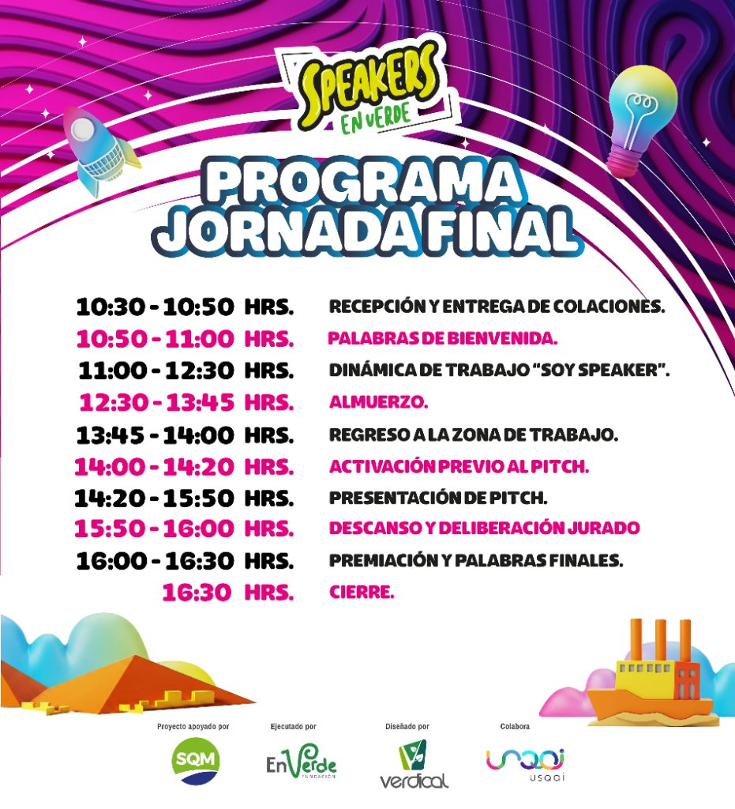

Jóvenes líderes
ecoemprendedores
que transforman su entorno.
Descubre el recorrido de 10 equipos escolares de 9 establecimientos de Tocopilla y una delegación de más de 80 personas que viajarán a Antofagasta para presentar sus innovaciones medioambientales en la gran final comunal.
Invitación especial a nuestro distinguido jurado e instituciones aliadas.

El Recorrido Histórico de
Speakers en Verde
Desde 2019, la iniciativa se ha consolidado en la Región de Antofagasta generando puentes virtuosos entre educación escolar, sustentabilidad y alianzas interinstitucionales.
2019: Sembrando el Ecoemprendimiento
Speakers en Verde inicia su ejecución en la Región de Antofagasta, convocando a comunidades escolares para despertar tempranamente habilidades de innovación, resolución de desafíos medioambientales y oratoria formativa.
Instauración del modelo de ABP (Aprendizaje Basado en Proyectos) con mentorías orales y ambientales.
Alianza con Fundación Minera Escondida (FME)
En la recordada edición de 2022 impulsada por Corfo, Fundación Minera Escondida acompañó activamente el proceso como parte del prestigioso jurado evaluador, representada por Jenny, fortaleciendo el feedback a los jóvenes oradores y validando el impacto transformador del programa.
Consolidación y Jurado de Excelencia
Crecimiento en la articulación público-privada, incorporando expertos del ecosistema de innovación regional y organizaciones comprometidas con la juventud de Antofagasta.
Tocopilla en el Centro de la Innovación
Focalizado en la comuna de Tocopilla, reuniendo a 10 equipos de 9 escuelas. Apoyado por SQM, ejecutado por Fundación En Verde con el diseño de Verdical y la colaboración de Usqai UCN.
Más de 80 personas (estudiantes, profesores guías y apoderados) se trasladan este 13 de noviembre para vivir la jornada final comunal en dependencias de Usqai UCN.
¿Cómo se prepararon los
equipos de Tocopilla?
No es solo un concurso de pitch: es un viaje pedagógico anual basado en evidencia científica internacional y pertinencia regional. A través del aprendizaje experiencial y la co-creación, los estudiantes exploran su entorno y dan vida a soluciones sostenibles.
Sustento Metodológico
- Fundación Kauffman: Los jóvenes que participan en programas tempranos de emprendimiento desarrollan mayor creatividad, resiliencia y resolución crítica de problemas.
- Informe GEM Chile & ERI: Abordaje concreto de las brechas de innovación regional mediante el desarrollo de talentos locales desde el aula escolar.
- Metodología Verdical: Experiencia práctica combinando educación ambiental, modelo de negocios escolar y expresión escénica.
Planificación & Difusión
Plan de trabajo, levantamiento de estado del arte y reuniones iniciales con los centros educativos de Tocopilla para coordinar la participación.
Charla de Lanzamiento
Jornada motivacional con los estudiantes y docentes beneficiarios para presentar el propósito y las oportunidades del programa.
Proceso de Convocatoria
Llamado abierto para jóvenes entre 6° básico y 4° año medio de establecimientos públicos y particulares subvencionados de Tocopilla.
Selección Inicial
Evaluación rigurosa según rúbrica de bases, priorizando propuestas nacidas en el aula escolar que solucionen dolores ambientales locales.
Compra & Entrega de Insumos
Financiamiento directo de materiales, fletes y servicios específicos para que cada equipo escolar pudiera prototipar su solución en la escuela.
Mentorías Presenciales
Entrenamiento intensivo en oratoria, comunicación asertiva, expresión corporal escénica, modelo de negocios y tolerancia a la frustración.
Seguimiento Continuo
Acompañamiento remoto y presencial con los profesores líderes para afinar detalles técnicos y resolver dudas del proceso.
Preselección de Equipos
Validación de adquisición de competencias y cumplimiento de hitos para definir la delegación finalista clasificada.
Gran Final Comunal
13 de Noviembre en Usqai UCN: Presentación de pitch de 5 minutos ante jurado calificado, premiación y reconocimiento a la comunidad tocopillana.
Los 10 Proyectos Finalistas
Propuestas creadas por niñas, niños y jóvenes de Tocopilla que unen tecnología, economía circular, inclusión y salud comunitaria.
Cronograma Oficial de la
Gran Jornada Final
Una jornada completa pensada para empoderar a los estudiantes tocopillanos, fomentar la camaradería regional y culminar con la ronda de presentaciones ante el jurado calificador.
Inicio de la Ronda de Pitch
Momento estelar en que los 10 equipos expondrán durante 5 minutos sus proyectos ante los miembros del jurado e invitados de honor.

Avenida Angamos 0610, Antofagasta (Universidad Católica del Norte).
Recepción y Entrega de Colaciones
Llegada de la delegación de Tocopilla y acreditación de los equipos participantes.
Palabras de Bienvenida
Apertura oficial por parte del equipo organizador y colaboradores del programa.
Dinámica de Trabajo "Soy Speaker"
ActivaciónTaller dinámico y vivencial de expresión, autoconfianza y calentamiento escénico para los escolares.
Almuerzo de Camaradería
Espacio de descanso, nutrición e integración entre estudiantes, docentes y organizadores.
Regreso a la Zona de Trabajo
Reagrupación de equipos y preparación final de presentaciones.
Activación Previo al Pitch
Alineación de energía, respiración y últimos ajustes de oratoria.
Presentación de Pitch (5 min c/u)
Momento CumbreLos 10 equipos escolares defienden sus proyectos ante el jurado calificador y la audiencia invitada.
Descanso y Deliberación del Jurado
El jurado pondera los criterios según rúbrica oficial y define las distinciones.
Premiación y Palabras Finales
Entrega de reconocimientos valorados, diplomas y balance del programa.
Cierre de la Jornada
Despedida de delegaciones y retorno a Tocopilla.
Ecosistema de Colaboración
Una sinergia público-privada y comunitaria comprometida con el desarrollo del talento joven en el norte grande de Chile.
SQM
Impulsa decididamente iniciativas socioambientales y el florecimiento de talentos en Tocopilla y la región.
Fundación En Verde
Liderazgo operativo en terreno, vinculación territorial permanente y desarrollo de capacidades comunitarias.
Verdical
Diseño metodológico integral, innovación pedagógica y mentoría experta en ecoemprendimiento y oratoria.
USQAI UCN
Laboratorio de Emprendimiento de la Universidad Católica del Norte, espacio anfitrión para la gran final.
Fundación Minera Escondida (FME)
Recordando con gratitud su participación en el jurado evaluador de la edición 2022 (impulsada por Corfo y representada por Jenny), hoy extendemos nuestra más cálida invitación para contar formalmente con la presencia e imagen institucional de FME en esta instancia final 2026 (presencia de marca en gráficas y registros audiovisuales de la jornada).
Bases Oficiales del Concurso 2026
Conoce los lineamientos completos, criterios de evaluación del jurado, etapas del proceso y condiciones de participación del certamen Speakers en Verde.